Mobile Nomad: Галерея в кишені
Найкраща камера — та, що завжди з тобою.
Найкраща камера — та, що завжди з тобою.
Закопане: Душа гір (Highland Vibe)
Тут мобільна камера ловить велич скель та затишок дерев'яних хатин.
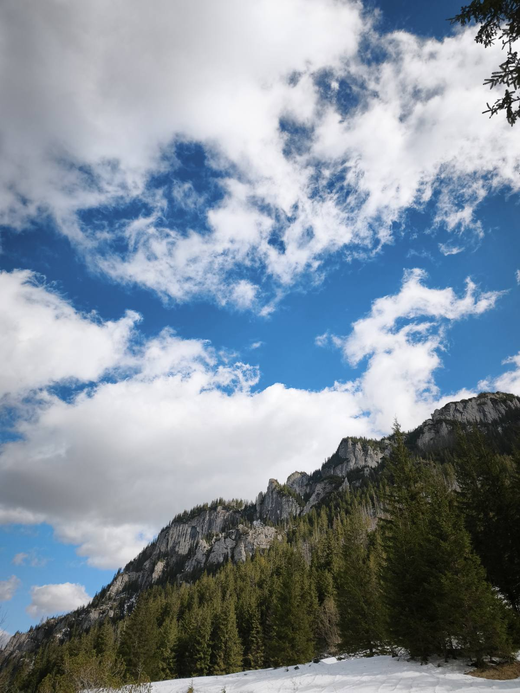
Зображення 1
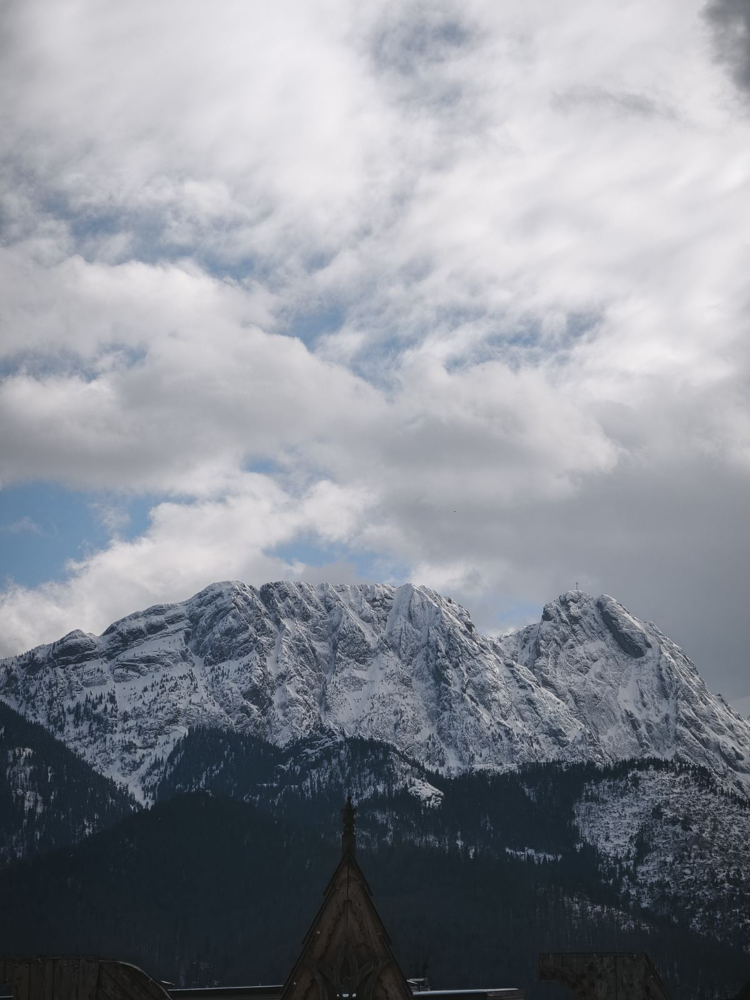
Зображення 2
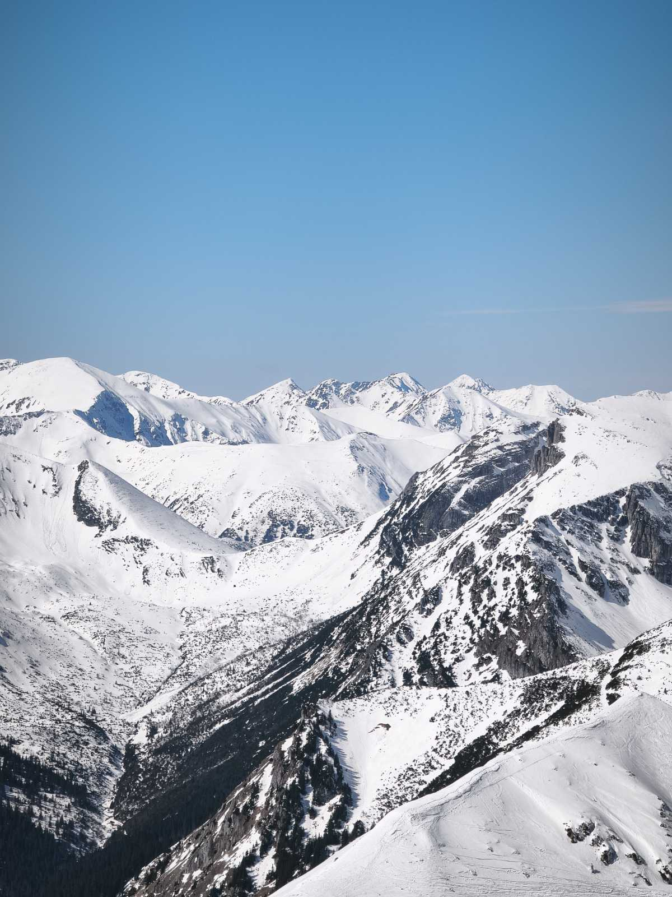
Зображення 3
Кудова-Здруй: Естетика спокою (Slow Living)
Місто-курорт, де хочеться знімати деталі парків та архітектуру "старої Європи".
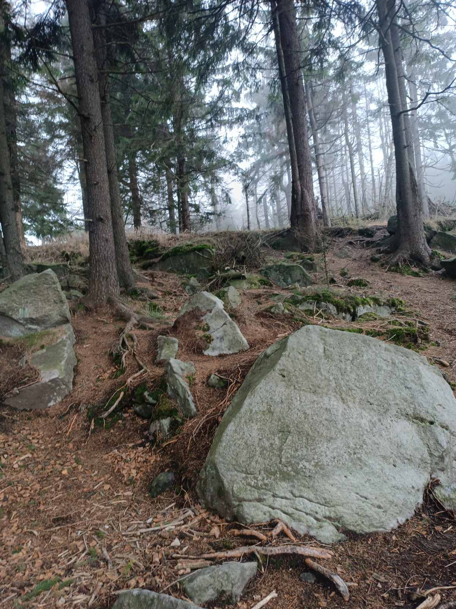
Зображення 1
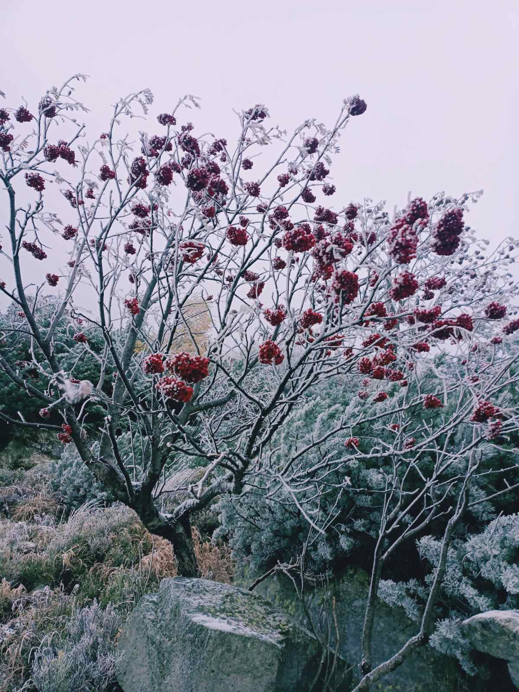
Зображення 2
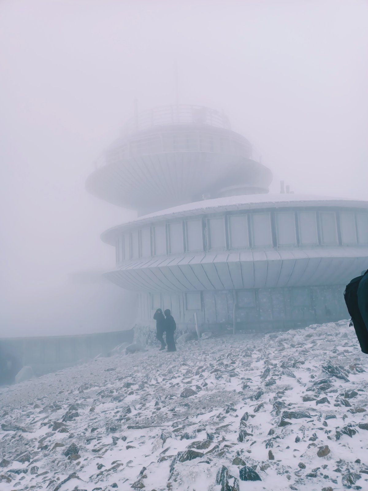
Зображення 3
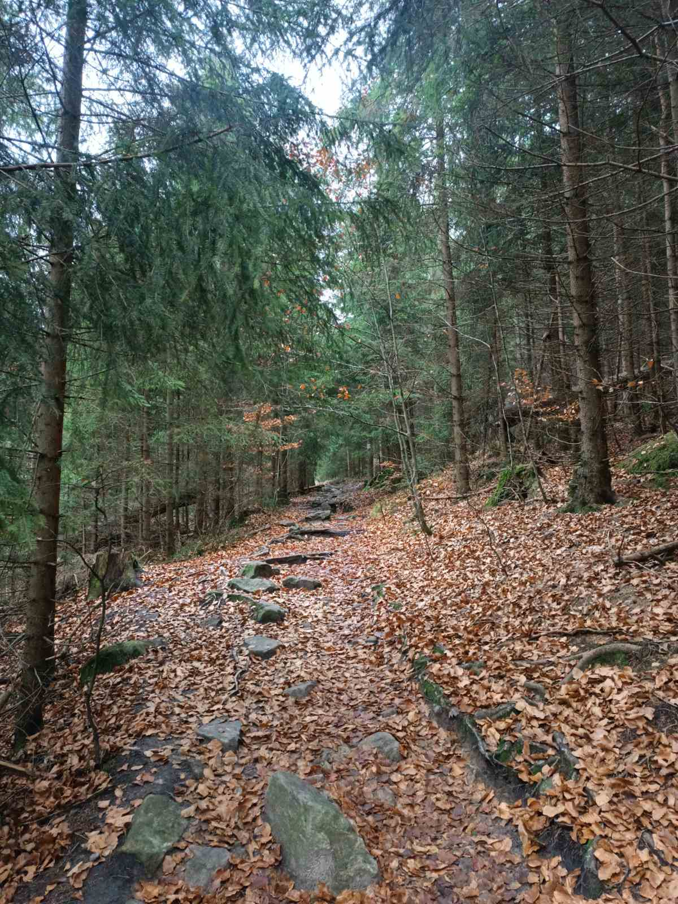
Зображення 4
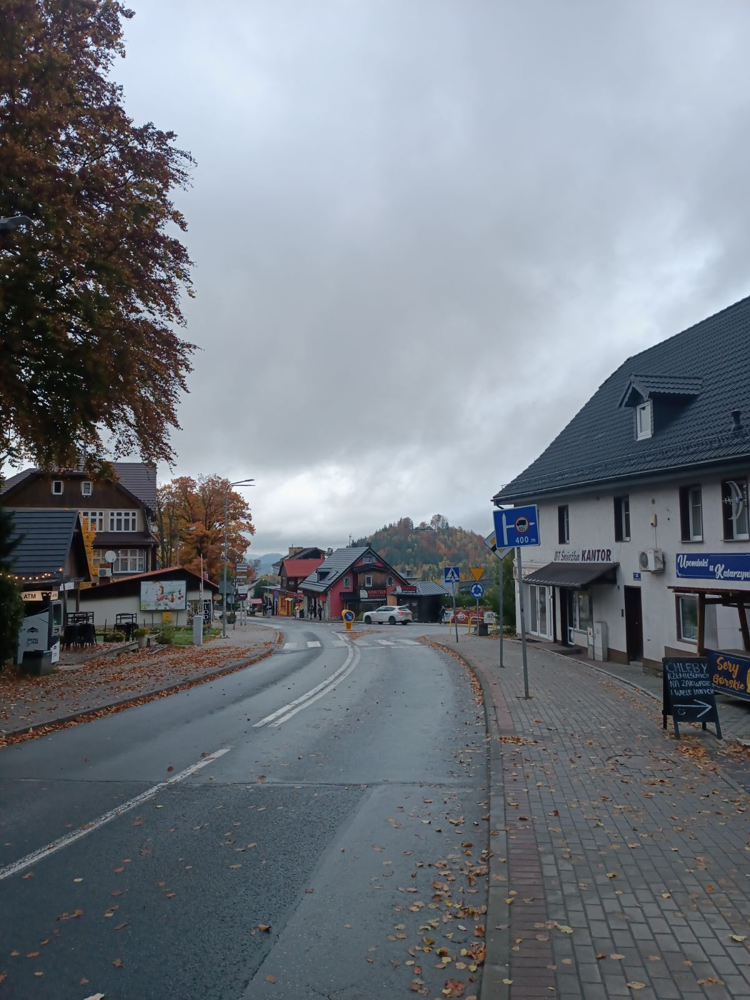
Зображення 5
Ніцца: Блакитний берег (Azur Life)
Смартфон тут "плавиться" від яскравості кольорів та морського повітря.
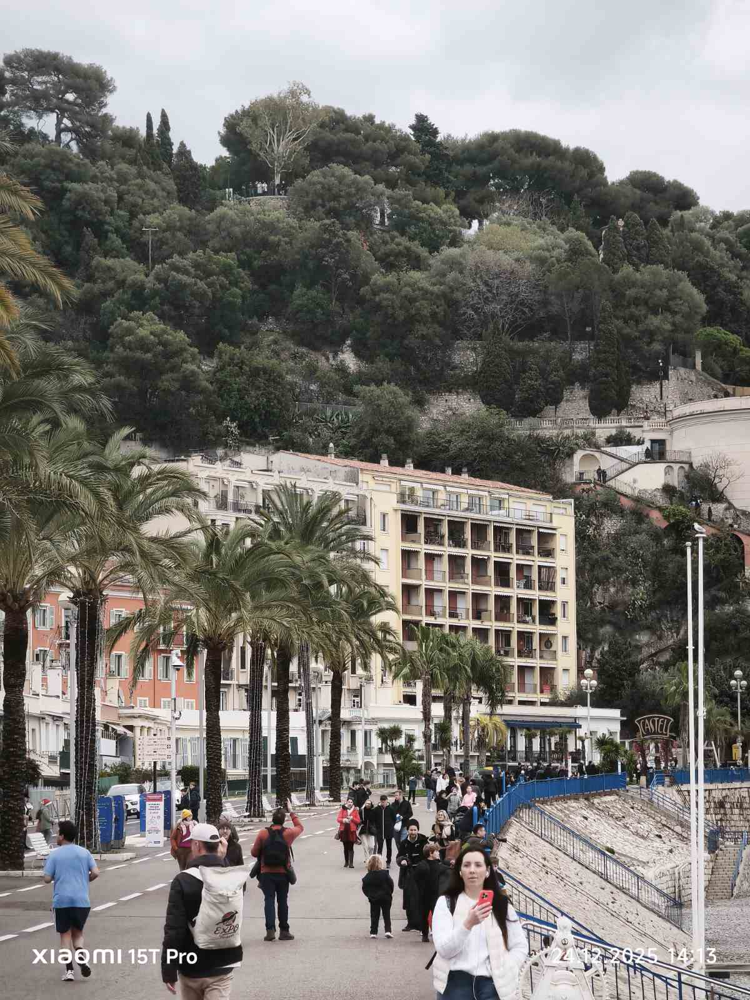
Зображення 1
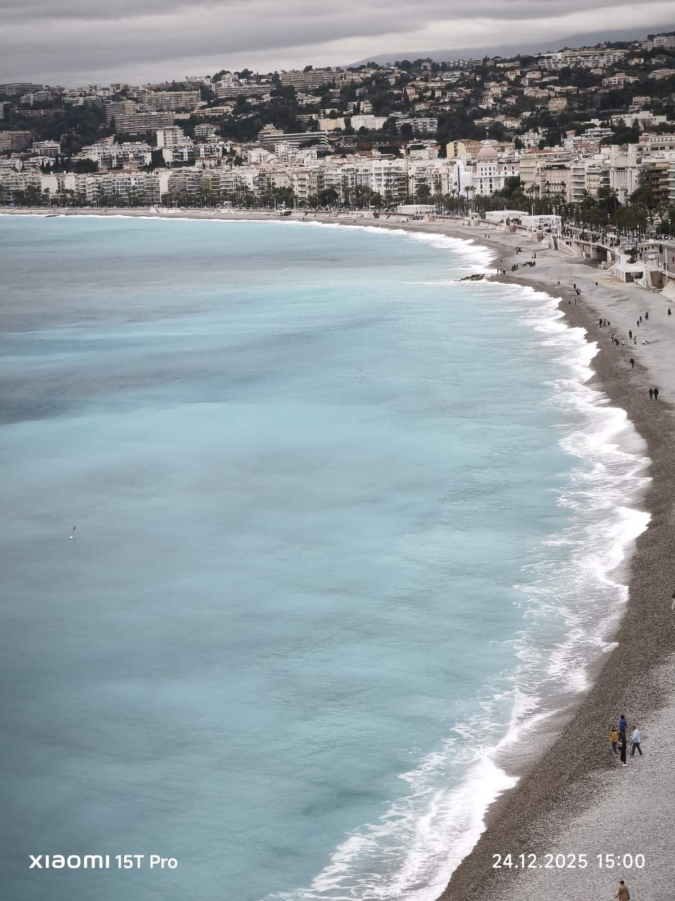
Зображення 2
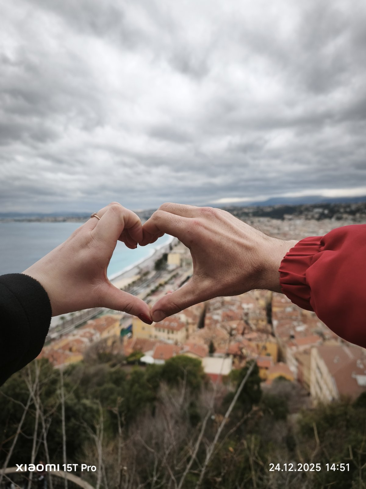
Зображення 3
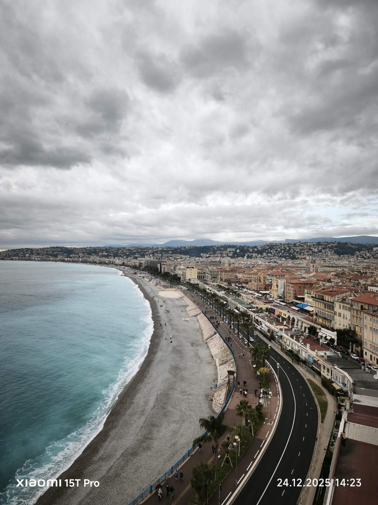
Зображення 4